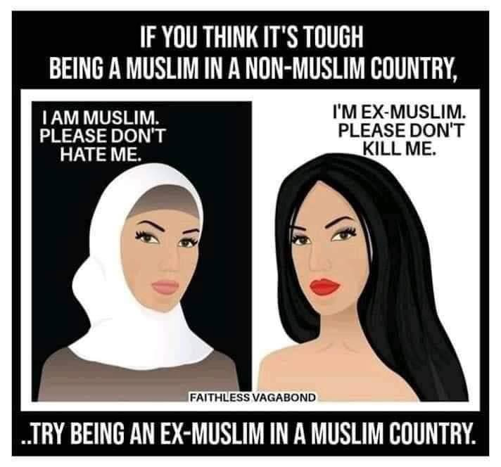

There is no such thing as "Islamophobia," as Islam is an ideology and, like all ideologies, is fully open to criticism.
If Muslims face discrimination in Western countries for their identity as Muslims, it should be termed "Muslimophobia," not Islamophobia. Any Muslim living in Western societies who respects secular principles and is willing to integrate into society deserves equal human rights. Discrimination against such individuals solely for being Muslim is unjust and unacceptable.
The term "Islamophobia," however, is a cleverly constructed propaganda tool. It conflates criticism of Islam as an ideology with prejudice or hatred toward Muslims as individuals. This misrepresentation serves to shield Islam from legitimate scrutiny and debate by framing any criticism as a form of bigotry.
Table of Contents:
- Consequences of Kafirophobia
- The Challenges Faced by Ex-Muslims in Islamic Societies
- Without Integration you have Balkanization
- The Disease of Kafirophobia is giving birth to the Disease of "Political Islam", which aims to destroy the Secular System and impose the Sharia System
- Is the Western Demand for Integration from Muslims against Secularism?
- Excuse: But the overwhelming MAJORITY of Muslims residing in the West are "Peaceful"
- The disease of Kafirophobia stabbed in the back of humanity-loving Left-Wing Secular People:
- Islamist's Excuse: The term Islamophobia was invented by a non-Muslim
- Islamist's Excuse: Muslims hate the West while they invaded and killed thousands in Iraq and Afghanistan
Islamophobia vs Kafirophobia
As compared to Islamophobia, the threat of Quranic "Kafirophobia" is real.
This Quranic teachings of Kafirophobia teaches Muslims that Kafirs:
- Are donkeys 62.5, 74.50
- Are dogs 7.176
- Are cattle 7.179, 25.44, 47.12
- Are losers 2.121, 3.85, 5.5, 8.37, 10.95, 27.5, 29.52, 39.63, 39.65
- Are wicked 8.37
- Are insolent 6.146, 7.166, 40.75, 67.21
- Are hard-hearted 39.22, 57.16
- Are deaf 2.171, 5.71, 6.39, 17.97, 30.52
- Are blind 2.171, 5.71, 17.97, 30.53, 41.44
- Are dumb 2.171, 6.39, 17.97
- Are ignorant 6.111, 39.64
- Are miserly 4.37
- Are begrudging 3.120
- Are transgressors 5.64, 5.78, 6.110, 7.186, 10.11, 10.74, 37.30, 50.25
- Are corrupting 5.64, 10.40
- Are filthy 9.28
- Are superficial 19.73-74
- Are traitors 5.13, 22.38
- Are liars (Over 10 verses)
- Are perverse 5.75, 9.30, 10.34, 35.3, 40.63
- Are envious 2.90, 2.109, 2.213, 3.19
- Are evildoers (Over 10 verses)
- Are degraded 5.41
- Are feeble 22.73
- Are deluded 3.24, 6.130, 7.51, 35.40, 45.35, 67.20
- Are arrogant (Over 10 verses)
- Are defiant (Over 10 verses)
- Are conceited 38.2
- Are ungrateful 22.38, 35.36, 39.3
- Are the vilest of animals in Allah's sight 8.55
- Are the worst of all creatures 98.6
- Are Allah's enemy 2.98, 8.60, 41.28, 60.1
- Are Muslims' enemy 4.101, 8.60, 60.1-2
- Have impure hearts 05.41
- Have schadenfreude 3.120
- Allah hates them 35.39, 40.10
- Allah does not love them 3.32, 22.38, 30.45
- Allah destroys them 3.141, 17.58, 21.6, 28.43
- Allah disgraces them 9.2, 16.27
- Allah defiles them 6.125, 10.100
- Allah tortures them 4.56, 18.29, 22.19-22, 40.71-73
- Allah forsakes them 7.51, 20.126, 32.14, 45.34
- Allah curses them (Over 10 verses)
- Allah humiliates them (Over 10 verses)
- Allah casts terror into them 3.151
- Allah turns them into apes 2.65, 5.60, 7.166
- Allah turns them into pigs 05.60
- Allah turns them into worshippers of evil 05.60
- Allah turns them into scum 23.41
- Allah sends devils on them 19.83
- Allah ignores their good deeds 18.105
These Quranic teachings are nothing else than Hate Speech against non-Muslims, who don't accept Muhammad as a prophet.
Consequences of Kafirophobia
Some Islamic apologists argue that:
- "All religious texts contain passages that may be interpreted as hate speech. Therefore, singling out the Quran for criticism is an act of Islamophobia."
While this argument may appear valid at first glance, a deeper look reveals important distinctions:
- Many followers of other religions, such as Christianity and Hinduism, have undergone significant reform over time. These communities have largely adopted secular principles, distancing themselves from ancient teachings in their scriptures that may promote intolerance or hostility. As a result, hate speech in their religious texts is no longer followed in practice, nor is it widely endorsed by their religious leaders.
- In these reformed traditions, religious texts, such as the Bible or Vedas, are openly subject to critique without triggering widespread accusations of "Bibleophobia" or "Vedophobia."
In contrast, many Islamic scholars and communities continue to hold literal interpretations of certain Quranic verses that advocate intolerance toward Kafirs (non-believers). Attempts to critique these verses are often met with strong resistance, labeled as "Islamophobia," which conflates legitimate criticism of ideology with prejudice against individuals.
The debate around "Islamophobia" should differentiate between criticism of religious ideologies and discrimination against individuals. Genuine reform requires an open dialogue about the teachings within religious texts without conflating such discussions with hate or prejudice.
Consequences of Kafirophobia on the State Level:
How can Muslim apologists compare the harms of Quranic teachings of Kafirophobia with any other religious book, when:
| Issue | In Muslim-Majority Countries | In Non-Muslim Countries |
| Preaching Religion |
|
|
| Apostasy (Leaving Islam) |
|
|
| Criticism of Religion |
|
|
| Marriage Laws |
|
|
| Freedom to Criticize Islam |
|
|
Note:
Some Islamic apologists argue that Islam allows non-Muslims to criticize it. However, in practice, this claim does not hold true. The Quranic teachings and societal norms in many Islamic countries have created an environment where any criticism of Islam is automatically labeled as blasphemy or framed as causing "disturbance of societal harmony."
This leads to severe consequences, such as imprisonment or worse, for those who critique Islam. As a result, it is nearly impossible to find any books or materials in Islamic countries that openly criticize Islam. The practical implementation of such laws and societal pressures effectively suppresses freedom of expression for non-Muslims in these regions.
Consequences of Kafirophobia on the Public Level
(1)
In Western countries, instances of job discrimination against Muslims often lead to protests and public outcry, framed as acts of Islamophobia.
However, in many Islamic countries, sermons and public speeches in mosques sometimes include messages that emphasize exclusivity in the name of KAFIR, such as:
- Encouraging Muslims not to take Kafirs (non-Muslims) as friends.
- Advising against participating in non-Muslim festivals or social gatherings, promoting a form of social boycott.
- Stressing the belief that And all Kafirs are one nation (الكفر كله ملة واحدة) while all Muslims are another nation.
For example, look how this Saudi Grand Mufti is OPENLY propagating hate speech against non-Muslims through Quranic verses (link):
Undoubtedly the Muslim should hate the enemies of Allaah and disavow them, because this is the way of the Messengers and their followers. Allaah says (interpretation of the meaning):
“Indeed, there has been an excellent example for you in Ibraaheem (Abraham) and those with him, when they said to their people: Verily, we are free from you and whatever you worship besides Allaah, we have rejected you, and there has started between us and you, hostility and hatred for ever until you believe in Allaah Alone” [al-Quran, Surah al-Mumtahanah 60:4]
“You (O Muhammad) will not find any people who believe in Allaah and the Last Day, making friendship with those who oppose Allaah and His Messenger (Muhammad), even though they were their fathers or their sons or their brothers or their kindred (people). For such He has written Faith in their hearts, and strengthened them with Rooh (proofs, light and true guidance) from Himself” [al-Quran Surah al-Mujaadilah 58:22]
Based on this, it is not permissible for the Muslim to feel any love in his heart (for them).
Consider how much controversy would arise if the Pope were to publicly promote similarly hostile views toward Muslims. The statements of the Saudi Mufti, who operates the largest Fatwa website, carry significant weight within his community, similar to the influence of the Christian Pope in the Christian world. In fact, his words often have more impact on the Muslim public than the Pope’s do on Christians.
The open preaching of this Kafirophobia all over in all Islamic countries results in extreme hatred against Kafirs on the Public and Society levels, where Islamic fanatics (on the individual level) kill thousands of Christians, Hindus, Sikhs, Ahmadis and Shias alone in Pakistan (link).
What makes this situation more concerning is that these views are not isolated to just one Saudi Mufti, but are openly promoted by millions of Islamic preachers across the Islamic world. This message is openly propagated in mosques without any scrutiny or criticism.
This becomes even more sacrier while in the Western countries, Islamic preachers are fully successful in preaching Kafirophobia and making majority of the Muslims (who reside in the Western countries) to believe in it. There is hardly any check upon it as it is written in the Quran.
The injustices and bloodshed due to Quranic teachings of Kafirophobia are thousands of times bigger than any Muslimophobia in Western countries, but still, we only hear about Islamophobia in the media, but nothing against this Kafirophobia.
(2)
When a Muslim woman wearing a hijab faces harassment in Western countries, the term Islamophobia is rightly brought to the forefront to highlight the issue.
However, concerns about the rights and safety of non-Muslim minorities in some Islamic societies often go unnoticed. For instance, reports have highlighted cases where non-Muslim girls are abducted, forced to marry Muslim men, and coerced into converting to Islam.
- In 2016, Sindh province in Pakistan, which has the country’s largest Hindu minority, passed a bill to outlaw forced conversions. Unfortunately, this bill was not ratified by the Governor have estimated that around 1,000 girls from minority groups are forcibly converted to Islam each year. Reference: https://en.wikipedia.org/wiki/Religious_discrimination_in_Pakistan
Again, we hear only Western societies being accused of Islamophobia, but we hear nothing about Kafirophobia in Islamic societies.
The Challenges Faced by Ex-Muslims in Islamic Societies
While Ahmadis are often perceived as the most oppressed minority in the Islamic world, the plight of ex-Muslims surpasses this significantly, both at the state and societal levels.
At the State Level:
- Ex-Muslims often face severe consequences for leaving Islam. Many Islamic states do not recognize their right to identify as non-Muslims.
- Apostasy is punishable by imprisonment or even the death penalty in some countries.
- Ex-Muslims risk losing their inheritance, custody of their children, and even their spouses. These measures are rooted in strict interpretations of apostasy laws and societal intolerance.
A Comparison with Ahmadis:
- Ahmadis, while facing systemic discrimination, are not sentenced to death for their beliefs. They are allowed to live and retain their inheritance and family ties, which highlights a stark contrast in the treatment of ex-Muslims.
Despite the gravity of their situation, the suffering of ex-Muslims has not yet gained significant global attention. Advocacy and awareness are crucial to addressing these human rights concerns.

At the Public Level:
In many Islamic societies, ex-Muslims face immense social pressure and harsh consequences for expressing their lack of belief. There is often a widespread societal intolerance that can lead to violent reactions, such as public harassment or even lynching. As a result, many ex-Muslims are forced to live in secrecy, concealing their true beliefs and outwardly conforming to Islamic practices, such as:
- Performing the five daily prayers
- Observing the 30-day Ramadan fast
- Attending Friday prayers
- Studying Islamic texts at school and university
This duplicity can be emotionally and mentally exhausting.
Ex-Muslim women face particularly harsh challenges. In addition to other things, they also have to wear the hijab throughout their lives, whether they want to or not. They are often coerced into marrying Muslim men against their will and are expected to serve their husbands for the rest of their lives. They cannot reveal their true beliefs even to their own children, who may accidentally disclose their mothers' apostasy to others. To avoid social repercussions, ex-Muslim women must raise their children as Muslims, further perpetuating the cycle of secrecy and deception. The psychological strain of living such a life can become unbearable, leading some individuals to resort to suicide as a means of escape.
Why all this suffering? The answer is: Only due to the disease of Kafirophobia.
Please go to the Ex-Muslim Subreddit and read the stories of thousands of ex-Muslims, who are forced to live this double life in their Islamic countries. They are bleeding, they are crying, they are in pain, but the world is unaware of their sufferings.
Despite all this oppression, we never hear any word against this Kafirophobia, but we hear only and only Islamophobia while some Western cities didn't allow building the minarets, although they allowed the building of mosques.

The Disease of Kafirophobia is making Western Society POLARIZED, making the Integration of Muslims impossible
Muslims didn't face any persecution in the West in the past, and they were provided with equal human rights. That is why millions of Muslims immigrated on their own to Western countries.
Unfortunately, the Quranic teachings of Kafirophobia make it difficult for Muslims (especially religious Muslims) to integrate into the local community.:
- The Quran & Sharia ask them to consider the local community to be impure Kafirs.
- The Quran & Sharia ask them to openly hate and oppose the SECULAR Liberal Laws of the local countries and openly call for the imposition of the Sharia Laws.
- The Quran & Sharia ask them not to join them in any of their celebrations and festivals.
- The Quran & Sharia ask them not to marry them.
- The Quran & Sharia ask them not even to dress like them to stop any possible integration.
The message of the Quran to Muslims is: "Rather than to integrate & assimilate, you have to segregate and dominate."
All these Quranic teachings of Kafirophobia are making Western society extremely POLARIZED, where different groups are hostile to each other and are not ready to mix and integrate.
The Record of integration of Muslim communities is extremely bad as compared to any other foreign community. Their majority don’t share the mainstream societies’ views on gender equality, homosexuality and other topics — even in the 2nd, 3rd and 4th generation.
Without Integration you have Balkanization
"Balkanization" of society refers to the fragmentation or division of a society into smaller, often hostile, groups based on ethnic, religious, cultural, or other identities. This term originates from the historical geopolitical fragmentation of the Balkan Peninsula in Southeast Europe, where multiple ethnic and national groups have experienced intense conflicts and division.
Key Aspects of Balkanization:
-
Fragmentation:
- Society is split into smaller, distinct groups that identify strongly with their own community rather than the larger society.
- These groups may form along ethnic, religious, linguistic, or cultural lines.
-
Hostility and Conflict:
- The divisions often lead to tension, mistrust, and sometimes open conflict between different groups.
- The groups may compete for resources, political power, or social influence.
-
Weakening of National Unity:
- The overall unity and coherence of the nation-state are undermined.
- National identity becomes less significant compared to subgroup identities.
-
Impact on Governance:
- Effective governance becomes challenging as the society becomes polarized.
- Policies and decisions may be contested or blocked by different groups, leading to political instability.
- In case of Muslims, it is giving rise to "Political Islam" in the western countries.
-
Social and Economic Consequences:
- Social cohesion is weakened, which can lead to decreased economic cooperation and development.
- Communities may become isolated from each other, reducing opportunities for interaction and mutual understanding.
The Disease of Kafirophobia is giving birth to the Disease of "Political Islam", which aims to destroy the Secular System and impose the Sharia System
The Quranic teachings of Kafirophobia are directly giving birth to the disease of "Political Islam".
Political Islam aims to destroy and end Secular laws and replace them with Sharia laws for everything like blasphemy, marriages, apostasy, homosexuality, gender equality etc.
In short, political Islam is a TRAITOR to the Secular system and it aims to break the secular system and replace it with the Sharia system.
Of course, as a minority, they are not able to achieve these goals. They still dream about it and find ways to implement it through different means, like increasing their population through increased birthrate and immigration.
Many Muslims do not even hide these malicious intentions anymore against the secular system and they openly express their intention.
Islamic Preachers come up with the following argument, to defend the Quranic teachings of non-integration:
Secularism is against collectivism and based upon ‘individualism’ and talks about the rights and liberties of an individual person. It’s moral stance is that an individual person is allowed to do whatever he wishes to do, and let others do whatever they want to do. Therefore, when the Western people demands the ‘social integration’ from Muslim, who are living in the West, they are themselves contradicting the basics of the Liberalism/Secularism.
Our Response:
These Islamists are suffering from the huge disease of misunderstanding Secularism.
Yes, of course, Secularism gives the liberty of 'personal choice' to a person, but ONLY on an "individual & personal" level. For example, if an individual person does not participate in the Christmas celebrations according to his ‘personal choice’, then there is no problem with it. Similarly, if a Muslim woman chooses not to marry a non-Muslim based on personal preference, that decision is fully within her rights.
The criticism is not upon the ‘personal choice’ of an individual person, but it is upon the ‘Collective behaviour' of the Community’, where they think that their religion has ordered them ‘collectively’ to neither marry non-Muslims, nor they are allowed to celebrate their festivals , nor they can become friends, nor to integrate with them. This is equal to NEGATING and DECEIVING Secularism by MISUSING it.
Other communities—whether Jewish, Christian, Hindu, or atheist—are integrating into Western societies without difficulty because they have recognized that secular values, which are rooted in a broader sense of humanity, take precedence over religious doctrines.
If only one community does not reform itself and does not get rid of those religious hate teachings, which go against Secular Values, then they will never be able to integrate, even if they keep on living here in Europe for the next thousands of years.
The takeaway is clear: humanity and Secular values must be prioritized over all religious beliefs.
Excuse: But the overwhelming MAJORITY of Muslims residing in the West are "Peaceful"
One Muslim friend raised this point:
But the overwhelming numbers of Muslims in the West are peaceful people. Religious fanatics from all religions are dangerous and Muslims are no exception.
Our Response:
Unfortunately, being ONLY “peaceful” is not enough.
Yes, being ONLY "peaceful" is not sufficient to "integrate" into the local secular society.
If a group of people opposes the secular system and laws, aiming to eradicate them and impose Sharia laws, either by force or through increasing their numbers in a democratic way, it is still a war against secularism. This will inevitably sooner or later lead to Balkanization, and a collision and wars of values, cultures, and communities.
Such a group of people has not truly accepted SECULARISM; they are merely Temporarily Tolerating the secular system (until they gain enough power). This is not the same as being "peaceful," because this "peace" is only temporary until the inevitable point of collision.
Only those who are genuinely loyal to secular values, who reject and deny those Sharia rulings that conflict with secular human values on global level, deserve to be called peaceful.
All others, who are merely temporarily tolerating secularism, inwardly opposing it, and intending to rebel against it and destroy it once they gain enough power, are TRAITORS to the secular system and do not deserve to be called "peaceful."
“Muslimophobia” cannot be stopped as its origins lie in the Kafirophobia
Muslims historically did not face persecution in the West and enjoyed equal human rights, which is why millions chose to migrate to Western countries.
However, with the rise of 'Political Islam' in the West, animosity towards Muslims has increased. Islamic preachers often label this opposition as Islamophobia, but it's important to note that 'Quranic Kafirophobia' itself has been the instigator of this cycle of hatred.
The core issue arises when Muslim preachers assert their right to propagate their religion in Western countries while simultaneously denying non-Muslims the right to preach their beliefs in Muslim-majority countries. Furthermore, in some Muslim countries, any criticism of Islam can be met with severe punishment, including death for blasphemy. These double standards inevitably fuel resentment.
Therefore, the crucial question is: who is truly responsible for the growing hatred against Muslims?
The answer is: The root cause lies with Muslims themselves, their double standards, and their persecution of non-Muslims. Until the disease of Kafirophobia ends, it will be impossible to eradicate Islamophobia.
Islamic preachers often protest against Islamophobia, but they have never acknowledged the real root of the problem: the teachings that promote hatred against non-believers.
This so-called Islamophobia will persist as long as Muslims do not address and eliminate their own intolerance and injustice and hatred. Currently, Muslims are entirely focused on combating Islamophobia, while neglecting to confront and reform their own disease of Kafirophobia.
The disease of Kafirophobia stabbed in the back of humanity-loving Left-Wing Secular People:
It was the humanity-loving left-wing Secular people of the West, who said welcome to Muslims in their countries, allowed them to immigrate and gave them EQUAL human rights.
By not getting rid of the disease of Kafirophobia, by not REFORMING yourself, by not considering non-Muslims as equal humans, and by not integrating, the Muslim community only stabbed in the back of the humanity-loving left-wing forces in Western countries. It will result only in the weakening of left-wing forces and the strengthening of far right-wing forces, which will ultimately only result in increased hatred against Muslims.
If the far right-wing parties are winning the elections in European countries today, then this disease of Kafirophobia is the main reason behind their rise.
If you really want to reduce the hatred against Muslims and make it safer for Muslims, then you have to recognise the real cause and reform yourself first.
Karl Popper said:
Tolerance of intolerance leads to the destruction of tolerance itself.
Islamist's Excuse: The term Islamophobia was invented by a non-Muslim
An Islamic preacher offered the following justification:
It was rather uninformed and foolish to assert that the term "Islamophobia" originated with Muslims when it is widely known that it was first coined by Alain Quellien, a non-Muslim Frenchman, in 1910. He used it to describe a "prejudice against Islam that is widespread among the peoples of Western and Christian civilization." Therefore, the term was introduced by a non-Muslim Westerner.
Response:
It doesn't matter who invented this terminology. Western scholars are also fallible, and their works are subject to scrutiny like any others.
As demonstrated earlier, the term "Islamophobia" is flawed, and any animosity towards Muslims should rightly be termed "Muslimophobia."
And it has also been proved that Islamists are using it as a tactic to put a ban on all types of criticism against Islam by calling it Islamophobia.
Islamist's Excuse: Muslims hate the West while they invaded and killed thousands in Iraq and Afghanistan
Our Response:
Wars are unfortunate, but they are not the reason for the hate among Muslims against the West. But the real reasons are:
- Quranic teachings of Kafirophobia
- And the wish among Muslim masses to IMPOSE Sharia all over the non-Muslim world by force.
When Muslims were stronger, they waged many more wars and brought much more destruction against their opponents.
Look at Muhammad. He either killed ALL men of opponents or made the rest of them slaves. While all women were also made slaves and also raped. Islamic Jihadists looted all the money and goods of opponents. Muhammad also didn't spare small children (who had no role in wars), but he made them slaves too for their entire lives. It didn't end there, but Islamic Sharia also got the evil of "Slavery by Birth", and thus coming generations of those slaves were also automatically born as slaves.
Thus, Muhammad brought 100% destruction upon his opponents, which the modern West never did during any war.
Ibn 'Aun reported: I wrote to Nafi' inquiring from him whether it was necessary to extend (to the disbelievers) an invitation to accept (Islam) before meeting them in fight. He wrote (in reply) to me that it was necessary (only) in the early days of Islam. The Messenger of Allah (ﷺ) made a raid upon Banu Mustaliq while they were unaware and their cattle were having a drink at the water. He killed those who fought and imprisoned others (and made them slaves).
Or consider the actions of the Islamic Caliphate of Turkey towards its opponents in Europe over the past few centuries, particularly when it held significant power. Turkey's role in the genocide of the Armenian people in 1915, serves as a stark example. The Armenian genocide, documented in detail here (https://en.wikipedia.org/wiki/Armenian_genocide), resulted in the deaths of 1.5 million Christian Armenians.
Curiously absent from the discourse of Islamic preachers today is any mention of these atrocities committed against Christian Armenians, or Turkey's historical actions against Christian Europe. This selective silence may stem from the tendency for people to forgive and forget past wartime conflicts.
It's important to acknowledge that nobody is infallible; everyone is capable of making mistakes. While the West is not immune to errors, it has generally exhibited more restraint and compassion than Muhammad and Muslims did when they held positions of power.
Despite past conflicts, the West has demonstrated a remarkable capacity for forgiveness and reconciliation. Wars between European nations and Germany, as well as between the US and Japan, have not led to lasting hatred towards ordinary citizens.
Furthermore, the West has extended forgiveness even towards Muslims, allowing millions of Muslims to immigrate to their countries and granting them equal human rights. It's worth noting that there is no legal obligation for Western countries to accept Muslim immigrants due to their colonial past; rather, such decisions are motivated by humanitarian considerations. Contrastingly, Islamic countries often do not extend the same hospitality to Muslims from other Islamic nations.
The Fundamental Problem:
Wars were waged by governments. One may understand if fanatic Islamic preachers only hate Western Governments for wars. No, but their hate is directed towards the Western SECULAR System itself and the Western people (the so-called Kafir non-Muslims).
These extremists reside within secular societies, yet they harbour no loyalty towards secularism. On the contrary, they vehemently oppose it, waging a relentless war against the secular order with the aim of destroying the secular system and imposing Sharia law by force.
These fanatic Islamic preachers are taking their inspiration directly from the Quranic teachings of Kafirophobia.
Pakistani Taliban waged a war against Islamic Pakistan
Once again, the primary conflict lies not in the wars of Iraq or Afghanistan, but rather in the clash over the enforcement of the Islamic system through coercion.
Consider the clash between Islamic systems themselves. In 2009, the Pakistani government ceded control of the Swat region to the Tehrik-e-Taliban Pakistan (TTP) in an attempt to establish Sharia law there.
Yet, despite this concession, the TTP continued to denounce:
- The Islamic Constitution of Pakistan as a "Kafir" system.
- The Pakistani Islamic democracy as a "Kafir" system.
Following the agreement, the Pakistani Taliban regrouped and seized control of the adjacent Buner area, advancing towards Islamabad, with the intention of imposing Sharia law by force.
Thus, an internal conflict erupted in Pakistan, pitting one Islamic system against another, with the former branding the latter as "Kafir." Over 70,000 Pakistani Muslims lost their lives in this intra-Islamic war, and more than 10 million were displaced, becoming refugees in their own country.
Considering this internal strife within Islamic Pakistan, where even its constitution, democracy, and Islamic system are rejected by Islamists, it becomes evident that they will never accept the democracy and secularism of Western nations.
Thus, these Islamists don't hate the Western system due to any Afghan/Iraq wars, but basically, they hate them due to the Quranic teachings of Kafirophobia, and their wish to destroy the Western system and to impose the Sharia system by force upon all non-Muslim countries.


 Hassan Radwan
Hassan Radwan